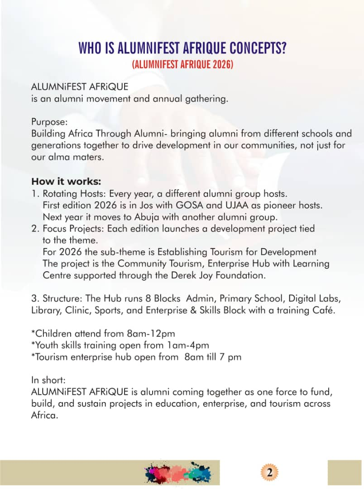

WHO IS ALUMNIFEST AFRIQUE CONCEPTS?
ALUMNIFEST AFRIQUE (ALUMNIFEST AFRIQUE 2026) is an alumni movement and annual gathering.
Purpose: Building Africa Through Alumni—bringing alumni from different schools and generations together to drive development in our communities, not just for our alma maters.
How it works:
- Rotating Hosts: Every year, a different alumni group hosts. First edition 2026 is in Jos with GOSA and UJAA as pioneer hosts. Next year it moves to Abuja with another alumni group.
- Focus Projects: Each edition launches a development project tied to the theme. For 2026 the sub-theme is Establishing Tourism for Development. The project is the Community Tourism, Enterprise Hub with Learning Centre supported through the Derek Joy Foundation.
- Structure: The Hub runs 8 Blocks: Admin, Primary School, Digital Labs, Library, Clinic, Sports, and Enterprise & Skills Block with a training Café.
- *Children attend from 8am–12pm
- *Youth skills training open from 1am–4pm
- *Tourism enterprise hub open from 8am till 7pm
- Alumni Funding: Alumni groups fund the project through ticket sales, sponsorships, and donations. (*Ticket sales are for the festival and not for the project)
- Sustainability: Alumni groups continue to support the project through mentorship programs. (*The project is not a one-off but a sustainable initiative for the community.)
In short: ALUMNIFEST AFRIQUE is alumni coming together as one force to fund, build, and sustain projects in education, enterprise, and tourism across Africa.